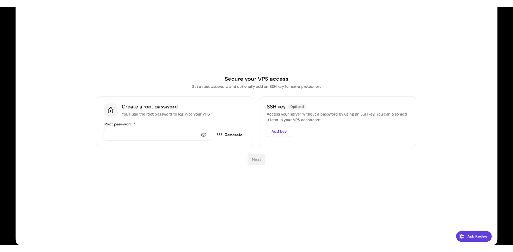
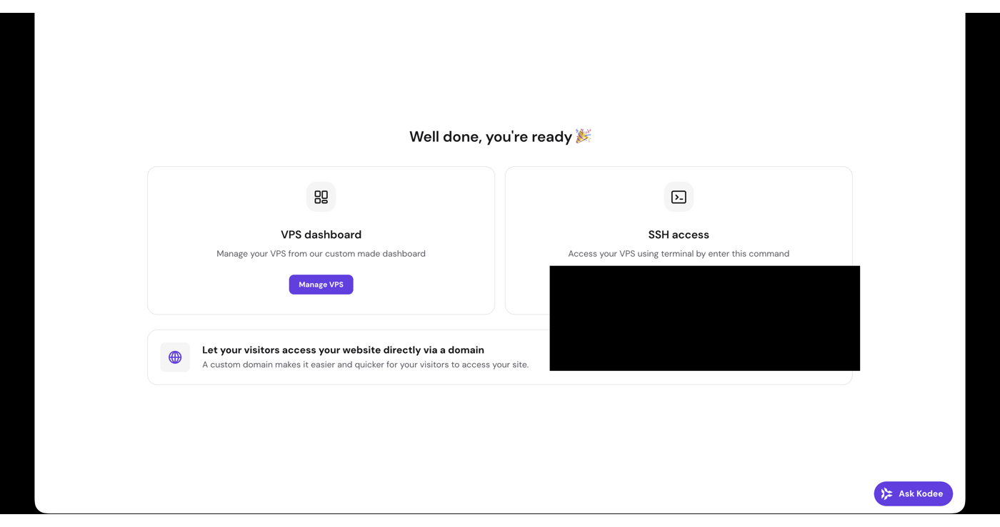
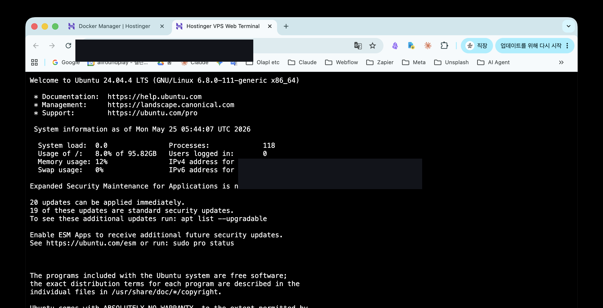

노트북을 닫아도
24시간 일하는 AI 동료를
서버 한 대에 올리기
터미널을 한 번도 안 만져봤어도 괜찮습니다. 명령어는 전부 복사 버튼으로 붙여넣으면 되고,
단계마다 "왜 하는지"와 "여기까지 됐으면 성공"이 있어요.
서버 빌리기 → 두뇌 설치 → 오픈클로(🦞) 올리기 → 봇에게 영혼(성격) 넣기 → 슬랙 연결 → 도구 달기까지,
클로드 코드와 코덱스 두 버전으로 안내합니다.
👉 처음 만드는 분은 위에서부터 차례대로, 이미 맥에서 봇을 쓰던 분은 맨 끝 🔄 로컬에서 이전 시를 추가로 보세요.
왜 VPS인가? (5분 개념)
VPS는 "인터넷에 항상 켜져 있는 컴퓨터 한 대를 빌리는 것"입니다. 내 맥은 닫으면 꺼지지만, 이 서버는 24시간 깨어 있어서 슬랙으로 봇을 부르면 휴대폰에서도 답이 옵니다.
| 내 맥 (로컬) | VPS | |
|---|---|---|
| 가동 시간 | 맥 켜져 있을 때만 | 24시간 (닫아도) |
| 비용 | 맥미니 약 119만원 | 월 약 1.3만원 |
| 외부 접속 | 어려움 | 휴대폰 슬랙으로 호출 |
4레이어로 그림 그리기 (전체 멘탈 모델)
엔진(②)·LLM(④)은 갈아끼는 부품, 워크스페이스(③)는 우리가 키우는 자산입니다. 그래서 시간은 09단계(영혼 넣기)에 가장 많이 쓰고, 엔진·모델을 바꿔도 ③ 성격은 그대로 가져갑니다.
시작 전 준비물
아래 4가지를 미리 만들어 두세요.
Pro 또는 Max. 무료 플랜 불가. claude CLI가 이 구독으로 로그인 → API 과금 0원.
코덱스 봇을 쓸 때만 필요. codex CLI가 OAuth로 사용.
봇 성격·작업 파일을 private repo로 전달하는 통로.
봇 앱을 만들어 토큰 2개를 발급할 곳 (08단계에서 함께 진행).
Hostinger VPS 만들기
먼저 서버를 한 대 빌립니다. 여기까진 클릭만 하면 돼요.
- Hostinger VPS 구매 → 플랜은 KVM 2면 충분 (봇 1~2마리 기준)
- 서버 위치: 한국에선 말레이시아(지연 ~84ms) 권장
- OS: Ubuntu 24.04 LTS 선택
- Secure your VPS access 화면에서 root 비밀번호 설정

설치가 끝나면 대시보드에 IP 주소, Manage VPS, Terminal 버튼, ssh root@<VPS-IP> 명령이 보입니다.


SSH 키로 접속하기 — 보안 1단계
비밀번호 접속은 해커가 노리기 쉬워요. "열쇠(키) 파일" 방식으로 바꿉니다.
① 내 맥에서 — 전용 열쇠 만들기
ssh-keygen -t ed25519 -f ~/.ssh/myvps_key -N "" -C "my-vps"
cat ~/.ssh/myvps_key.pub # 이 공개키(한 줄)를 복사② VPS 웹터미널에서 — 공개키 등록
mkdir -p ~/.ssh && chmod 700 ~/.ssh
echo "<위에서 복사한 공개키>" >> ~/.ssh/authorized_keys
chmod 600 ~/.ssh/authorized_keys③ 내 맥에서 — 접속 확인
ssh -i ~/.ssh/myvps_key root@<VPS-IP>ssh 명령만으로 서버에 들어가진다.보안 잠그기 — 봇 올리기 전에 먼저!
# 1) 방화벽 — SSH(22)번 문만 열어둠
ufw allow 22/tcp && ufw --force enable
# 2) 무차별 대입 자동 차단
apt-get install -y fail2ban && systemctl enable --now fail2ban
# 3) SSH 비밀번호 로그인 끄기 (열쇠 전용)
cat > /etc/ssh/sshd_config.d/00-hardening.conf <<'EOF'
PasswordAuthentication no
PermitRootLogin prohibit-password
KbdInteractiveAuthentication no
EOF
sshd -t && systemctl reload sshAI 엔진 설치 — 클로드 / 코덱스
봇의 "두뇌"를 설치합니다. 화면 없는 서버에서도 구독 OAuth 로그인이 됩니다(디바이스 코드 방식). 그래서 종량 과금 없이 구독으로 굴려요.
curl -fsSL https://claude.ai/install.sh | bash # sudo 금지!
echo 'export PATH="$HOME/.local/bin:$PATH"' >> ~/.bashrc && source ~/.bashrc
claude --version
claude # 위저드: 로그인(Pro/Max) → 브라우저 URL → 코드 붙여넣기 → /exit화면에 뜬 URL을 휴대폰·다른 컴퓨터 브라우저로 열고 코드를 붙여넣는 방식입니다. "Login successful"이 뜨면 /exit.
npm install -g @openai/codex
codex login # ChatGPT로 로그인 → 화면에 뜬 URL 열고 코드 붙여넣기
codex login status # "Logged in using ChatGPT" 확인claude --version 또는 codex login status가 정상 출력된다.오픈클로 설치 + 24시간 켜두기
두뇌 위에 오픈클로(🦞)를 얹습니다. 오픈클로를 처음 깔면 기본 봇 한 마리가 들어있어요(성격은 디폴트 — 06단계에서 우리가 바꿉니다).
# 오픈클로 설치
npm install -g openclaw
openclaw plugins install @openclaw/slack # 슬랙 채널 플러그인
# 게이트웨이를 백그라운드 서비스(systemd)로
openclaw config set gateway.mode local
openclaw gateway install🔁 24시간 살아있게 (핵심 2가지)
export XDG_RUNTIME_DIR=/run/user/0
# (1) linger — SSH 끊겨도, 재부팅돼도 서비스 유지
loginctl enable-linger root
# (2) 서비스 시작 + 부팅 시 자동 실행
systemctl --user enable --now openclaw-gateway.serviceactive (running) 상태다. (확인은 치트시트 참조)에이전트 설정 — 어떤 두뇌·모델을 쓸지
"이 봇은 클로드를 쓰고, 저 봇은 코덱스를 쓴다" 같은 연결을 ~/.openclaw/openclaw.json에 적습니다. openclaw config patch --stdin으로 JSON을 병합해요.
설정에 들어가는 핵심 블록
- auth — 클로드는
anthropic:claude-cli(oauth), 코덱스는openai-codex:<email>(oauth) - agentRuntime — 클로드 봇 =
claude-cli, 코덱스 봇 =codex-cli - agents.list — 봇별 id·workspace(09단계에서 만들 폴더)·model·호칭(mentionPatterns)
- bindings — 슬랙 계정 → 어느 봇에게 보낼지 라우팅 (07단계 연결)
agents.defaults.model.primary를 anthropic로 지정.② 슬랙 토큰을 환경변수로 두면 안 됨: env 참조로 두면 서비스가 토큰을 못 읽어 안 켜집니다 → config에 토큰 글자를 그대로(리터럴) 적으세요.
openclaw config validate
systemctl --user restart openclaw-gateway.serviceconfig validate 통과 + 봇·엔진·모델이 연결된 상태.슬랙 봇 페어링
슬랙 쪽에서 앱을 만들어 토큰 2개를 받고 → 오픈클로에 등록하면 끝. 매니페스트를 한 번 만들어두면 봇 이름만 바꿔 재사용할 수 있어요. 이 단계가 끝나면 봇이 슬랙에서 대화에 답하기 시작합니다 (성격은 디폴트, 영혼은 09단계에서).
[Slack 앱 생성] → [Bot Token + App Token 발급] → [openclaw channels add]
→ [봇이 워크스페이스 파일을 자동으로 읽음] → [슬랙에서 봇과 대화 시작]① 슬랙 앱 만들기 (매니페스트 붙여넣기)
api.slack.com/apps → Create New App → From a manifest → 워크스페이스 선택 → 아래 JSON을 그대로 붙여넣으면 권한·이벤트·Socket Mode가 한 번에 설정됩니다.
name(표시 이름)과 bot_user.display_name(슬랙에서 보일 이름)만 바꾸면 다른 봇에도 이 매니페스트를 그대로 씁니다.{
"display_information": {
"name": "내봇이름",
"description": "OpenClaw AI 에이전트",
"background_color": "#611F69"
},
"features": {
"app_home": {
"home_tab_enabled": false,
"messages_tab_enabled": true,
"messages_tab_read_only_enabled": false
},
"bot_user": {
"display_name": "mybot",
"always_online": true
},
"assistant_view": {
"assistant_description": "OpenClaw AI 에이전트",
"suggested_prompts": []
}
},
"oauth_config": {
"scopes": {
"bot": [
"app_mentions:read",
"assistant:write",
"channels:history",
"channels:read",
"chat:write",
"chat:write.customize",
"chat:write.public",
"commands",
"emoji:read",
"files:read",
"files:write",
"groups:history",
"groups:read",
"im:history",
"im:read",
"im:write",
"pins:read",
"pins:write",
"reactions:read",
"reactions:write",
"users:read"
]
}
},
"settings": {
"event_subscriptions": {
"bot_events": [
"app_mention",
"assistant_thread_context_changed",
"assistant_thread_started",
"channel_rename",
"member_joined_channel",
"member_left_channel",
"message.channels",
"message.groups",
"message.im",
"pin_added",
"pin_removed",
"reaction_added",
"reaction_removed"
]
},
"interactivity": {
"is_enabled": false
},
"org_deploy_enabled": false,
"socket_mode_enabled": true,
"token_rotation_enabled": false
}
}② 토큰 2개 발급
| 토큰 | 어디서 | 형식 |
|---|---|---|
| Bot Token | OAuth & Permissions → "Install to Workspace" | xoxb-... |
| App Token | Basic Information → App-Level Tokens → Generate (scope: connections:write) | xapp-... |
③ 오픈클로에 연결
openclaw channels add --channel slack \
--bot-token xoxb-xxxxx \
--app-token xapp-xxxxx
openclaw channels list # slack default ✓ configured 확인connections:write로 줘야 Socket Mode가 작동합니다. 빠지면 봇이 연결 안 돼요.봇 접근 제한 — 보안 2단계
channels.slack.allowFrom에 내 슬랙 user ID만 넣어 봇 호출을 본인으로 제한commands.ownerAllowFrom도 같이 설정
봇 워크스페이스 만들기 — SOUL · USER · AGENTS
봇 하나는 자기 워크스페이스 폴더 안에 성격을 담은 마크다운 파일들을 둡니다. 이 파일들은 봇이 켜질 때마다 자동으로 주입돼요. 8개 파일이 표준처럼 보이지만, 오픈클로가 실제로 자동으로 읽는 건 3개(SOUL·AGENTS·USER)뿐입니다. 신규 봇은 이 3개로 바로 시작하세요.
📁 봇 폴더 구조
~/.openclaw/
├── workspace-<내봇이름>/ # 봇 하나 = 폴더 하나
│ ├── SOUL.md # ★ 영혼: 성격·미션·말투
│ ├── USER.md # ★ 집사(나)는 누구인가
│ └── AGENTS.md # ★ 행동 규칙 (처음엔 빈 골격)
├── skills/<스킬이름>/ # 운영·자동화 스킬
└── agents/<id>/agent/auth-profiles.json # 봇별 로그인 정보(코덱스)SOUL·USER·AGENTS 3개는 워크스페이스 폴더 맨 위(루트)에 둡니다. 클로드 봇이든 코덱스 봇이든 위치는 같아요. (이 폴더 이름을 06단계 agents.list의 workspace에 적으면 연결됩니다.)
① SOUL.md — 봇의 영혼 (성격·미션·말투)
# SOUL.md — <내 봇 이름>
## 미션
(이 봇이 내 일에서 해결하려는 것 — 한 줄)
## 관계
나는 <봇 이름>. <나와의 관계 한 줄>
## 말투
- <나에게는 어떻게>
- <외부에는 어떻게>
- <금지어 / 금지 행동>
## 가치관
- <봇이 우선하는 것 3가지>② USER.md — 집사(나)는 누구인가
# USER.md — 집사
- **이름**: <내 이름>
- **호칭**: <봇이 나를 부를 호칭>
- **타임존**: Asia/Seoul (KST, UTC+9)
- **하는 일**: <한 줄 직무>
- **선호 스타일**: <답변 스타일 1~2개>
- **자주 쓰는 도구**: <도구 이름들>③ AGENTS.md — 행동 규칙 (빈 골격으로 시작)
# AGENTS.md — <내 봇 이름>
## Red Lines
(절대 넘지 않는 선 — 사고 나면 추가)
## 행동 규칙
(반복적으로 잘못하는 것 — 사고 나면 추가)
## 보안
(공개 채널에서 하면 안 되는 것)💬 더 쉬운 방법 — 봇에게 직접 시키기
파일을 직접 만드는 게 부담되면, 07단계에서 살아난 봇에게 슬랙에서 이 프롬프트를 보내 세팅을 맡길 수 있어요. (봇이 자기 워크스페이스 파일을 쓰는 권한이 있을 때)
이제 너를 내 전용 봇으로 세팅할게. 너의 워크스페이스 폴더에
SOUL.md · USER.md · AGENTS.md 3개 파일을 아래 내용으로 만들어줘.
[SOUL.md]
- 미션: (이 봇이 내 일에서 해결할 것 — 한 줄)
- 관계: 나는 (봇 이름), (나와의 관계 한 줄)
- 말투: 나에게는 (___), 외부에는 (___), 금지어/금지행동: (___)
- 가치관: (우선하는 것 3가지)
[USER.md]
- 이름: (내 이름) / 호칭: (나를 이렇게 불러줘)
- 타임존: Asia/Seoul (KST)
- 하는 일: (한 줄 직무)
- 선호 스타일: (답변 스타일 1~2개)
- 자주 쓰는 도구: (___)
※ 비밀번호·API키 같은 민감정보는 절대 넣지 마
[AGENTS.md]
- 지금은 'Red Lines / 행동 규칙 / 보안' 섹션 제목만 있는
빈 골격으로 만들어줘 (내용은 나중에 사고 날 때마다 추가할게)
다 만들면 저장하고, 새 성격이 적용되게 세션을 재시작해줘.괄호 안 (___)만 내 상황에 맞게 채워서 보내세요. 봇이 파일을 만들고 재시작까지 해줍니다.
MCP로 도구 달기 — 인기 MCP 카탈로그
MCP는 봇에게 앱(도구)을 달아주는 표준 방식이에요. 피그마·깃헙·구글 드라이브·노션 같은 걸 봇이 직접 다루게 됩니다. 필요한 것만 골라 추가하세요.
~/.openclaw/openclaw.json의 mcp.servers에 추가하거나 openclaw mcp set ... 명령으로 등록합니다.
다들 많이 쓰는 MCP
| 도구 | 방식 | 연결 정보 | 인증 |
|---|---|---|---|
| 🎨 Figma | 원격 | https://mcp.figma.com/mcp | OAuth (유료 플랜) |
| 🐙 GitHub | 원격 | https://api.githubcopilot.com/mcp/ | OAuth 또는 PAT |
| 📝 Notion | 원격 | https://mcp.notion.com/mcp | OAuth |
| 📚 Context7 라이브러리 문서 | 원격/로컬 | https://mcp.context7.com/mcp 또는 npx -y @upstash/context7-mcp | API 키(권장) |
| 🎭 Playwright 브라우저 자동화 | 로컬 | npx -y @playwright/mcp@latest | 불필요 |
| 📁 구글 워크스페이스 드라이브·캘린더·문서 | 로컬 | @piotr-agier/google-drive-mcp | Google OAuth |
| 🌐 Fetch 웹페이지 본문 읽기 | 로컬 | uvx mcp-server-fetch (npx 아님, Python) | 불필요 |
@modelcontextprotocol/server-gdrive와 슬랙 공식 패키지는 유지보수가 중단(아카이브)됐어요. 구글은 위 표의 @piotr-agier/google-drive-mcp(드라이브+캘린더+문서)를 쓰세요.GOOGLE_DRIVE_MCP_TOKEN_PATH)도 명시해야 연결됩니다. 빠지면 토큰을 못 찾아 미연결.봇 성격·코드 git 배포 체계
봇의 성격 파일(SOUL·AGENTS 등)과 작업 대상 코드는 GitHub에 두고 VPS가 받아오는 방식이 정석입니다. (백업·버전관리도 같이 됨)
GitHub(private, 소스) ──pull──▶ VPS 클론 ──배포 스크립트──▶ 라이브 워크스페이스
▲push (내 맥에서 수정)- GitHub 배포키(deploy key)를 VPS에 만들어 등록 (읽기전용/쓰기 구분)
- 배포 스크립트 =
git pull+ 정의 파일만 복사 (런타임 상태 MEMORY/HEARTBEAT는 안 건드림 → 충돌 방지) - 워크플로우: 내 맥에서 수정 → commit → push → VPS에서 배포 스크립트 실행
로컬 파일·옵시디안 연동
봇이 내 로컬 파일·옵시디안 위키를 다루게 하고 싶을 때의 안전한 방법입니다.
- 권장: 필요한 폴더/프로젝트만 git repo로 봇에 연결 (11단계와 동일 패턴). 경로가 repo로 자연히 제한되고 24시간 작동.
- 옵시디안 위키: vault를 git+GitHub로 → VPS가 클론 → 봇은 읽기 +
_inbox/에만 새 노트 발행. 내 맥은 Obsidian Git 플러그인으로 자동 동기화.
막혔을 때 — 함정 총정리
증상 → 해결. 막히면 이 표부터 보세요. (로컬에서 옮겨오는 경우는 맨 아래 이전 전용 섹션 참고)
| # | 증상 | 해결 |
|---|---|---|
| 1 | 봇이 새 성격대로 안 움직임 | 파일 저장 후 봇(세션) 재시작 |
| 2 | "Missing API key for provider openai" 에러 | 기본 모델을 anthropic로 지정 (07단계) |
| 3 | 서비스가 안 켜짐 (토큰 문제) | 슬랙 토큰을 config에 글자 그대로 적기 |
| 4 | 슬랙에서 봇이 연결 안 됨 | App Token scope connections:write + Socket Mode ON |
| 5 | 재부팅·SSH끊김에 봇이 죽음 | loginctl enable-linger + 서비스 enable |
| 6 | 구글(MCP) 연동 안 됨 | GOOGLE_DRIVE_MCP_TOKEN_PATH 경로 명시 |
| 7 | 공개 IP가 공격당함 | 키전용 SSH + ufw + fail2ban (봇 올리기 전에!) |
운영 치트시트
설치 후 자주 쓰는 명령어입니다. 즐겨찾기 해두세요.
# 상태 확인
systemctl --user status openclaw-gateway
# 재시작
systemctl --user restart openclaw-gateway
# 실시간 로그 보기
journalctl --user -u openclaw-gateway -fsystemctl --user 명령은 먼저 export XDG_RUNTIME_DIR=/run/user/0 가 필요할 수 있습니다.이미 로컬 맥에서 봇을 쓰던 경우
① 코덱스 로그인 정보 옮기기 (코덱스 봇만)
클로드는 VPS에서 다시 로그인하면 되지만, 코덱스는 로그인 정보가 파일로 저장돼서 맥에서 VPS로 옮겨야 합니다.
# (1) 코덱스 기본 로그인 파일
scp -i ~/.ssh/myvps_key ~/.codex/auth.json root@<VPS-IP>:~/.codex/auth.json
# (2) 오픈클로가 봇별로 따로 보관하는 로그인 파일 (<봇id>는 본인 것으로)
scp -i ~/.ssh/myvps_key \
~/.openclaw/agents/<봇id>/agent/auth-profiles.json \
root@<VPS-IP>:~/.openclaw/agents/<봇id>/agent/auth-profiles.json~/.codex/auth.json에도, 오픈클로 봇별 폴더(auth-profiles.json)에도 보관합니다. 둘 다 있어야 작동해요. (이걸 몰라서 "코덱스 봇 인증 실패"가 자주 납니다.)② 맥에서 돌던 봇은 반드시 꺼주세요
③ 봇 성격·작업 파일 가져오기
맥에 있던 SOUL·AGENTS 등과 작업 폴더는 GitHub를 거쳐 가져옵니다 — 11단계·12단계와 똑같아요. 맥에서 commit·push → VPS에서 pull.